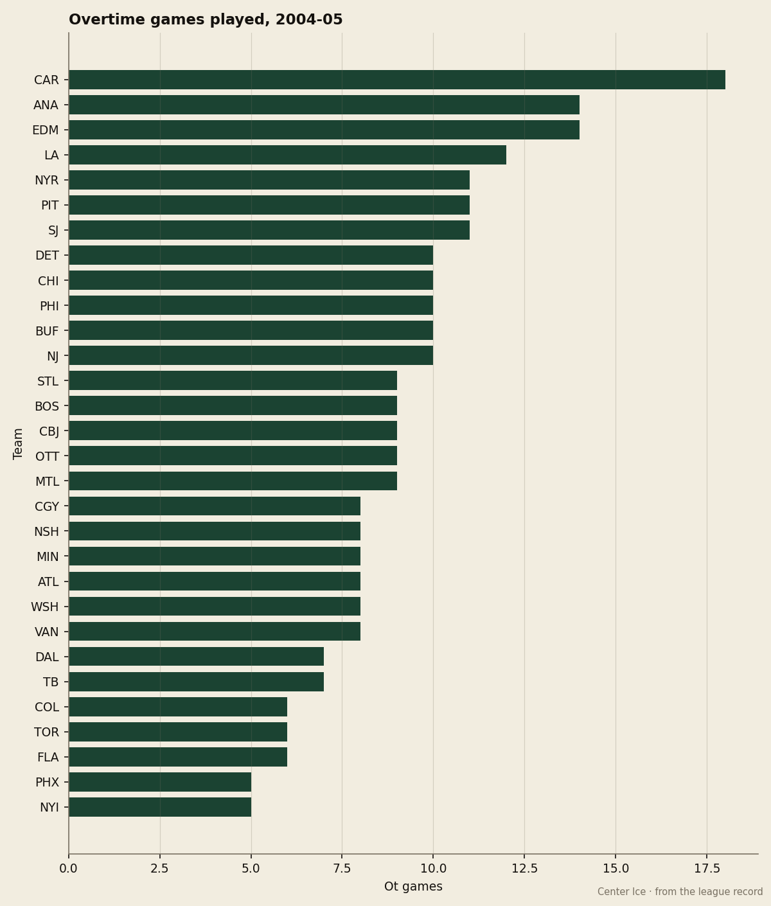
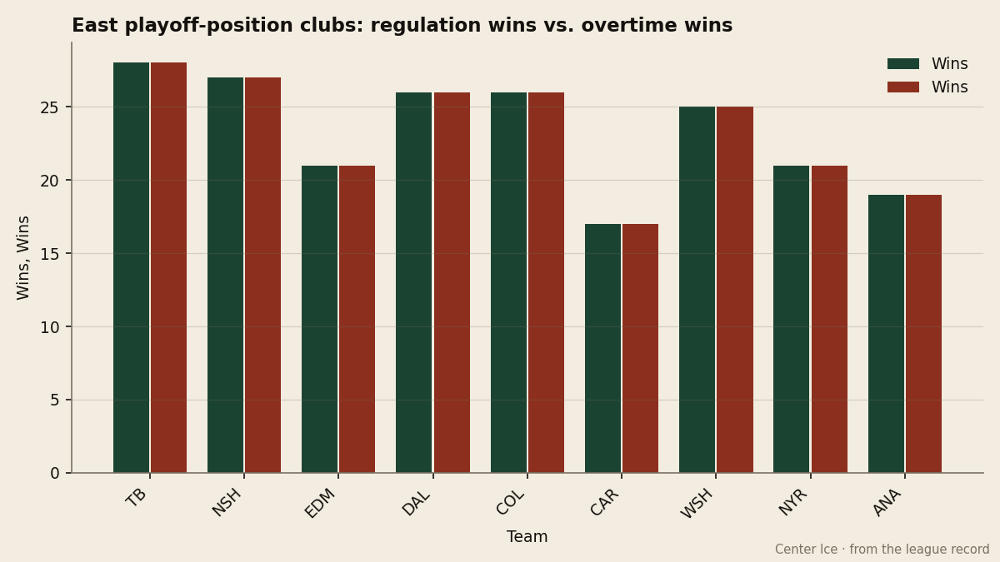

Carolina has played 18 games past regulation, 9 more than any other club, and holds 3rd in the East on 17 regulation wins
The Hurricanes lead the league in overtime games by a wide margin, and the standings system gives them a point for every single one
 Howard BlaineSenior writer, The Blaine Rankings · The Hockey Gazette
Howard BlaineSenior writer, The Blaine Rankings · The Hockey Gazette
The  Carolina Hurricanes Hurricanes have gone past regulation 18 times this season, 9 more than any other club in the 30-team league and exactly double the league average of 9. They are 3rd in the Eastern Conference with 61 points. They have won 17 games in regulation, fewer than any other club in the East's top 8.
Carolina Hurricanes Hurricanes have gone past regulation 18 times this season, 9 more than any other club in the 30-team league and exactly double the league average of 9. They are 3rd in the Eastern Conference with 61 points. They have won 17 games in regulation, fewer than any other club in the East's top 8.
The model is straightforward and the standings reward it: a game that goes to overtime produces at least 2 points for both clubs combined, regardless of who wins. Carolina has converted that structural advantage into a playoff position. The question the desk logs today is what happens when the coin flip lands the other way, or when a game does not go to overtime at all.

The splits show how the 61 points were built. The Hurricanes are 12 and 9 in games decided by 2 or more goals. In games decided by a single goal, they are 14 and 14. Of those 14 wins, 9 came in overtime; the remaining 5 came in regulation. Of the 14 losses, 9 came in overtime and 5 in regulation. The Hurricanes win and lose close games at the same rate, and they drag them to overtime more than any other team in the league.
Against the clubs immediately around them in the standings, the pattern holds. In four meetings with  New Jersey Devils, which sits 1 point back at 60, every game has been decided by one goal. Carolina has 0 regulation wins, 1 overtime win, 1 regulation loss and 2 overtime losses against New Jersey. In three meetings with
New Jersey Devils, which sits 1 point back at 60, every game has been decided by one goal. Carolina has 0 regulation wins, 1 overtime win, 1 regulation loss and 2 overtime losses against New Jersey. In three meetings with  Tampa Bay Lightning, 6 points ahead at 67, every game has gone to overtime. The Hurricanes have 0 regulation wins, 1 overtime win and 2 overtime losses against Tampa Bay. Seven games against its two closest conference neighbours, seven one-goal results, and not one regulation victory.
Tampa Bay Lightning, 6 points ahead at 67, every game has gone to overtime. The Hurricanes have 0 regulation wins, 1 overtime win and 2 overtime losses against Tampa Bay. Seven games against its two closest conference neighbours, seven one-goal results, and not one regulation victory.

The regulation win total is what makes this fragile. Tampa Bay Lightning has 28 regulation wins for 67 points.  Edmonton Oilers has 21 for 65.
Edmonton Oilers has 21 for 65.  Dallas Stars has 26 for 64. Carolina has 17, the fewest of any club holding a top-8 position, and makes up the difference with 9 overtime wins, the most in the league. The Hurricanes' points percentage including overtime wins is 53.1, the lowest of any top-9 East club. The others range from 50.0 (
Dallas Stars has 26 for 64. Carolina has 17, the fewest of any club holding a top-8 position, and makes up the difference with 9 overtime wins, the most in the league. The Hurricanes' points percentage including overtime wins is 53.1, the lowest of any top-9 East club. The others range from 50.0 ( Mighty Ducks of Anaheim, the 9th seed) to 66.7 (Tampa Bay Lightning).
Mighty Ducks of Anaheim, the 9th seed) to 66.7 (Tampa Bay Lightning).
The last ten games show what a cold stretch looks like under this model. Carolina went 4 and 6 over that span, outscored 37 to 28. An OT loss still gives 1 point where a regulation loss gives 0, so the model protects the floor, but a cold streak in overtime means accumulating singles while the clubs above take doubles in regulation.
The business column says the front office has bought the model, at least for now. Carolina pays $55.96M for 61 points, $0.92M a point, the 11th-cheapest rate in the league. Revenue is $56.47M on 16,433 a night at $80 a ticket, and the profit line reads $15.51M. The club missed the playoffs last spring entirely. This year, the +10 cushion over the 8th seed with 33 games left is real, and nobody at this desk is writing that Carolina is in. But the construction is unusual enough to log.
The week ahead puts two of those close rivals in the path: at  Florida Panthers on January 25, a club Carolina is 1 and 1 against, and at Tampa Bay Lightning on January 30, where all three meetings this season went to overtime. The Hurricanes have not won a game in regulation against either of the two clubs directly around them in the conference table. If that holds through February, the +10 cushion gets tested by teams who close in regulation and do not need the extra five minutes.
Florida Panthers on January 25, a club Carolina is 1 and 1 against, and at Tampa Bay Lightning on January 30, where all three meetings this season went to overtime. The Hurricanes have not won a game in regulation against either of the two clubs directly around them in the conference table. If that holds through February, the +10 cushion gets tested by teams who close in regulation and do not need the extra five minutes.